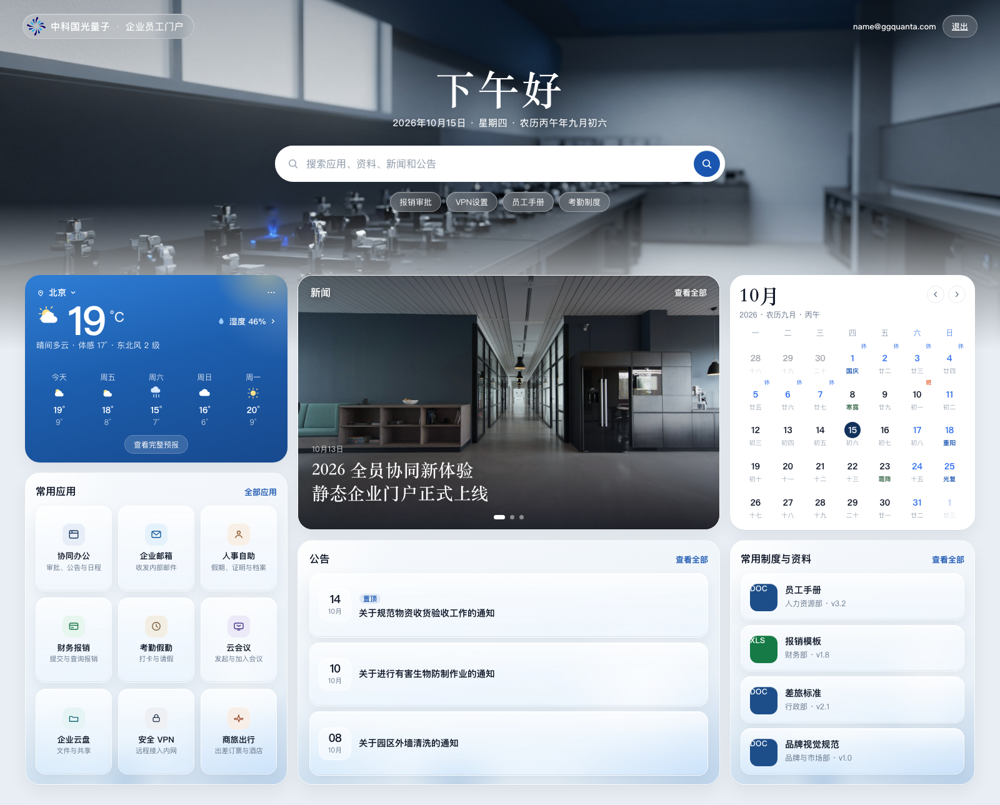

文档说明
本文定义企业员工门户一期的产品范围、信息架构、页面与交互、内容模型、搜索能力、技术架构、安全与发布治理，以及实施验收标准。设计、研发与内容维护应以本文为准；高保真视觉稿、组件标注与运维细则在本文确认后另行输出。
目录
- 项目背景、目标与建设方案
- 用户、任务与设计原则
- 一期范围与访问边界
- 信息架构与内容归属
- 全局布局与交互规范
- 页面详细设计
- 内容模型与文件管理
- 搜索方案
- 技术架构与部署
- 安全、隐私与非功能要求
- 内容治理与发布流程
- 后续演进路线
- 实施计划、验收与风险
- 附录
1. 项目背景、目标与建设方案
1.1 背景
企业信息通常分散在多个业务系统、共享目录、群消息、邮件和个人收藏中。员工需要记住内部组织方式、文件路径或具体联系人，才能找到工作入口与资料。这种方式会导致：
- 同一内容存在多个副本，员工无法判断哪个版本有效。
- 常用资料依赖口头传递，获取不稳定。
- 系统入口分散，重复查找较多。
- 新闻、公告和常用资料缺少统一入口。
- 旧链接、旧模板和过期制度难以及时下线。
1.2 产品定位
企业员工门户是员工查找信息、资源和工作入口的统一目录，不替代 OA、HR、CRM、财务、研发平台、NAS 等业务系统。
门户负责回答四类问题：
- 去哪里： 某个系统从哪里进入。
- 找什么： 某项制度、流程、表单、模板或培训资料在哪里。
- 看什么： 有哪些新闻和公告。
- 什么时候： 公历、农历、节假日安排，以及天气。
业务办理、数据录入、审批和个人信息查询仍由原业务系统承载。
1.3 一期建设方案概要
一期建设员工门户。应用、资料和公告须登录后使用。登录前后首页使用同一布局。新闻和公告由后台维护。一期不按个人点击排序，不提供收藏。
- 前端采用 React + TypeScript + Vite。
- 使用
@ggquanta.com邮箱注册后，再用邮箱和密码登录。 - 应用和日历节假日的目录采用 Markdown + JSON，由 Git 管理。
- 资料目录由后端定时服务从 NAS 指定目录同步。前端通过 S3 客户端下载，不使用 NAS 分享页。
- 新闻和公告在后台新建、编辑、发布和下线，保存在数据库。新闻预留多来源字段，一期来源仅为微信公众号。
- 登录前搜索只查已公开新闻，由接口查询数据库。登录后搜索检索应用、资料、新闻和公告的目录元数据。
- 构建将页面和静态搜索索引打入 Nginx 镜像；Compose 按镜像标签部署。
- 用户、新闻、公告和资料目录保存在同一 PostgreSQL。个人点击与收藏只预留字段，一期不写入。不建设应用、资料和日历的内容后台。
1.4 关键设计决策
| 决策项 | 一期结论 |
|---|---|
| 页面导航 | 不设导航菜单。登录前后首页使用同一布局。登录前展示搜索、新闻、日历、天气 |
| 栏目进入 | 应用、新闻、公告、资料的「查看全部」进入对应栏目。日历和天气的「查看全部」打开外部页面 |
| 新闻归属 | 新闻独立成栏目，不设分类；首页只聚合最新 3–5 条。展示来源。一期来源仅为微信公众号，按来源与外部标识去重。登录前只展示已公开新闻 |
| 公告归属 | 公告独立成栏目。按优先级和发布时间展示。含生效时间、过期时间、优先级和附件。不设详情页，点击预览附件。须登录后查看 |
| 日历 | 首页展示公历、农历和节假日安排。查看全部打开外部日历页面。不建设日历详情页。登录前可查看 |
| 天气 | 首页展示配置城市的当前天气。查看全部打开外部天气页面。不建设天气详情页。登录前可查看 |
| 内容复用 | 同一正式内容只维护一个详情实体，首页按稳定 ID 引用 |
| 搜索范围 | 登录前只查已公开新闻的标题、摘要、标签。登录后增加应用、资料和公告。不检索 NAS 文件正文 |
| 前端框架 | React + TypeScript + Vite； |
| 内容管理 | 应用和日历节假日用 Markdown/JSON + Git。资料目录由 NAS 同步写入数据库。新闻和公告用后台管理，不设分类 |
| 数据访问 | 用户、记住登录凭证、新闻、公告、资料目录，以及预留的点击与收藏字段，经 Drizzle 访问 PostgreSQL |
| 资料分类 | content/taxonomies/resources.yaml 定义分类 id、显示名、排序、启用状态和默认分类；资料只保存 id |
| 资料文件 | 定时服务同步指定目录的文件名、大小、更新时间和对象键。前端通过 S3 客户端下载。文件不进入门户镜像，不使用 NAS 分享页 |
| 登录 | @ggquanta.com 先注册再登录。注册验证邮箱，登录使用密码。人机验证用 ALTCHA |
| 登录前 | 与登录后首页同一布局。展示搜索、已公开新闻、日历、天气，以及注册和登录入口 |
| 访问边界 | 内部页面和资料下载须登录。全员内容不等于互联网公开内容 |
| 个性化 | 一期全员应用顺序相同。个人点击次数和收藏只预留字段，二期再使用 |
| 后续权限 | 部门级授权在后续阶段实施，不能仅靠前端隐藏入口 |
1.5 一期目标
一期目标不是建设“大而全”的数字工作台，而是建立可持续维护的统一目录。
具体目标：
- 员工无需知道文件存储位置即可找到常用资料。
- 员工可以从一个入口进入常用应用。
- 门户能够以较低成本部署、备份、回滚和迁移。
1.6 成功指标
以下为一期建议目标，最终数值应在内容盘点和基线测试后确认：
| 指标 | 建议目标 | 测量方式 |
|---|---|---|
| 核心查找任务成功率 | ≥ 90% | 5–8 名跨部门员工完成规定任务 |
| 典型资料查找中位耗时 | ≤ 60 秒 | 手册、报销模板、VPN 等任务测试 |
| 高频搜索词零结果率 | ≤ 5% | Top 20 高频查询测试集 |
| 目标结果排名 | 前 3 位 | 高频查询人工验收 |
| 上线时失效链接 | 0 | 自动检查与人工抽查 |
| 上线时敏感文件误发布 | 0 | 发布清单和打包目录审查 |
| 移动端核心任务完成率 | 100% | 规定页面与打开资料任务测试 |
2. 用户、任务与设计原则
2.1 主要用户
| 用户类型 | 主要需求 |
|---|---|
| 全体员工 | 查找应用、资料、新闻、公告，并查看日历和天气 |
| 内容维护人员 | 在后台发布新闻和公告，并维护资料分类与 NAS 目录配置 |
| 门户维护人员 | 维护目录、校验内容、发布版本和处理失效资源 |
| 运维与安全人员 | 控制访问边界、部署、备份、回滚和安全检查 |
一期不根据部门或岗位展示个性化首页，也不按个人点击排序，不提供收藏。所有用户看到相同的全员视图。
2.2 核心用户任务
用户任务按优先级分为：
P0：必须顺畅完成
- 打开 OA、HR、邮箱、VPN、报销等常用应用。
- 使用
@ggquanta.com注册并登录。 - 找到员工手册、制度、流程、表单和模板。
- 搜索已知名称或关键词并进入正确结果。
- 查看新闻和公告。
- 查看日历（含农历和节假日安排）和天气。
P1：应当完成
- 按分类浏览全部应用和资料。
- 打开资料文件。
P2：后续优化
- 按个人点击次数排序常用应用，并提供收藏。
- 个性化推荐。
- 部门或岗位差异化内容。
- NAS 文件正文全文检索。
- 内容订阅、历史记录和阅读进度。
2.3 设计原则
- 按员工任务组织，而不是按内部组织结构堆叠。
- 搜索可见且优先，不只提供放大镜图标。
- 首页负责聚合，不复制正式内容。
- 同一内容只有一个权威详情实体。
- 入口名称使用员工语言，避免内部缩写和建设方术语。
- 需要跟进时标明下一步动作。
- 移动端保留完整核心任务，不把它视为缩小版桌面。
- 无结果、无内容、失效和异常状态必须可解释。
- 全员可见、内部可访问和互联网公开是不同概念。
- 一期不以未来能力为由增加当前实现复杂度。
3. 一期范围与访问边界
3.1 一期包含
- 未登录首页与登录后首页同一布局。未登录展示搜索、已公开新闻、日历、天气。
- 登录后首页在相同位置增加常用应用、公告、资料。
- 首页下方六个模块：常用应用、新闻、公告、资料、日历、天气。登录前不展示常用应用、公告、资料。
- 应用、新闻、公告、资料的「查看全部」进入对应栏目。日历和天气的「查看全部」打开外部页面。
- 门户页面不设导航菜单。
- 标题、摘要、标签、别名等目录元数据搜索。
- 资料目录：定时服务同步 NAS 指定目录中的文件名、大小、更新时间、对象键和分类。
- 资料下载：前端通过 S3 客户端下载。不打开 NAS 分享页。客户端只使用服务端签发的短期访问。
- 新闻与公告后台：新建、编辑、发布、下线。新闻含来源字段。公告含生效时间、过期时间、优先级和附件。
- 桌面端和移动端响应式页面。
- 应用和日历节假日的 Markdown/JSON、Git 评审和静态构建。
- 含页面和静态搜索索引的 Nginx 镜像，以及 Compose 部署、备份和回滚。
@ggquanta.com注册、登录、改密和记住登录。- 新闻、公告、资料目录和用户数据库及其备份。
- 个人点击次数和收藏的字段预留。一期不写入、不展示。
3.2 一期不包含
- 个人资料与用户中心。
- 我的待办、工资条、我的申请和个性化推荐。
- 按个人点击排序和收藏。字段已预留，一期不使用。
- 部门、岗位、项目或个人级权限。
- 在线审批和评论。
- 应用、资料、日历的在线内容后台。
- 日历详情页和天气详情页。
- 微信公众号以外的新闻来源。
- 通用业务 API。
- 服务端写入 NAS，或在门户内管理 NAS 文件。
- PDF、Word、Excel 等文件正文全文索引。
- 业务系统 iframe 嵌入。
- 组织部门、办公地点和品牌资料专页。
- 导航菜单。
- 个人日程、会议。
- 按个人定位的天气。
3.3 注册与登录
只接受 @ggquanta.com。服务端将邮箱转为小写后校验后缀。其他域名不能注册，也不能登录。管理员可导入账号，并标记必须改密。
注册
- 填写企业邮箱，完成人机验证。
- 向该邮箱发送验证码，验证通过后由用户设置密码。
- 密码按策略校验，只以哈希写入 PostgreSQL。
- 未完成验证码或未设密码的记录不能登录。
登录
- 完成人机验证。
- 填写邮箱和密码。服务端先校验人机结果，再校验账号和密码。
mustChangePassword为真时，只能进入改密页。自己注册并已设密码的账号，该标记为否。- 管理员重置或批量导入的账号，该标记为真。改密成功后作废该用户已有会话，须用新密码再登录。
- 登录成功后签发记住登录凭证。凭证仍有效时直接进入门户。
忘记密码由管理员重置，并标记必须改密。连续失败后锁定一段时间。
记住登录
- 记住的是登录状态，不在浏览器保存密码。
- Cookie 为
HttpOnly、Secure、SameSite=Lax。 - 有效期 14 天。退出、停用或改密后，旧凭证作废。
- 凭证只在 PostgreSQL 保存哈希。会话校验可用 Redis。
人机验证
采用自建 ALTCHA，与官网后台相同。
- 注册页和登录页使用
altcha-widget，中文，不自动通过。 - 挑战为
PBKDF2/SHA-256，计算成本5000，10 分钟过期。 - 密钥为
ALTCHA_HMAC_SECRET。正式环境必须配置；未配置时仅允许本地降级。 - 解答为空或校验失败时拒绝请求，并要求重新验证。
- 单进程时，已用解答记在内存。多副本时写入 Redis。
密码
- 至少 8 位，不超过 128 位，须同时含字母、数字和特殊字符。
- 只存哈希，不写日志，不进入前端包。
账号字段
| 字段 | 说明 |
|---|---|
@ggquanta.com，唯一 |
|
| passwordHash | 密码哈希 |
| mustChangePassword | 是否必须改密 |
| status | 启用或停用 |
| canManageContent | 能否进入新闻与公告后台 |
| lastLoginAt | 最近登录时间 |
登录前展示
- 与登录后首页使用同一页头和模块位置。
- 页头为 Logo、搜索、注册和登录。
- 搜索、已确认为公开的新闻、日历、天气。
- 新闻、日历、天气可「查看全部」。
登录前不展示常用应用、资料和公告。未登录直接打开这些栏目时，先进入登录。
登录前搜索由接口查询数据库，只返回已发布且级别为公开的新闻。不读取登录后的全量搜索索引。
相关技术
| 用途 | 技术 |
|---|---|
| 注册与登录接口 | Hono |
| 用户与记住登录凭证 | PostgreSQL |
| 数据访问 | Drizzle |
| 邮箱验证码与会话校验 | Redis |
| 人机验证 | ALTCHA |
| 请求校验 | Zod |
| 会话凭证 | HttpOnly Cookie |
不接受的方式
- 公网匿名开放内部内容，仅通过“不宣传网址”保护。
- 仅用前端隐藏入口保护内部页面。
- 把资料文件放进门户站点，使未登录即可下载。
- 用 NAS 分享页或
\\路径作为资料入口。 - 在前端包中保存 NAS 长期密钥。
- 接受非
@ggquanta.com的注册或登录。 - 明文保存密码，或只在前端校验邮箱后缀和人机验证。
3.4 内容分级
| 级别 | 定义 | 一期处理 |
|---|---|---|
| 公开 | 可对互联网公开 | 可发布，但应确认版权与品牌规范 |
| 内部 | 可供全体员工查看 | 仅在受控访问边界内发布 |
| 受限 | 仅特定部门、岗位或项目可查看 | 不进入静态目录，也不进入新闻与公告库 |
| 敏感 | 涉及个人、客户、财务、密钥或安全配置 | 禁止发布 |
4. 信息架构与内容归属
4.1 首页模块
门户页面不设导航菜单。登录前后首页使用同一布局。搜索位于页头。
登录前，页头下方展示新闻、日历、天气，位置与登录后相同。登录后，页头下方展示下表六个模块。
| 首页模块 | 用户任务 | 查看全部 |
|---|---|---|
| 常用应用 | 打开高频系统 | 应用列表 |
| 新闻 | 查看最新新闻 | 新闻列表 |
| 公告 | 查看需要知晓的公告 | 公告列表 |
| 资料 | 查找制度、流程、表单和模板 | 资料列表 |
| 日历 | 查看公历、农历和节假日安排 | 外部日历 |
| 天气 | 查看配置城市的天气 | 外部天气 |
首页模块只展示摘要或推荐项。应用、新闻、公告、资料的「查看全部」进入对应栏目。日历和天气的「查看全部」打开配置的外部页面。栏目页不从菜单进入。
4.2 栏目内容
常用应用
- 办公协同
- 人事行政
- 财务采购
- 业务系统
- 研发工具
- 基础设施与安全
资料
- 制度与手册
- 流程与表单
- 模板与文件
- 培训与学习
新闻
- 按发布日期倒序的新闻列表和详情
- 不设分类
- 展示来源。一期来源仅为微信公众号
- 按来源与外部标识去重
公告
- 按优先级和发布时间倒序的公告列表。
- 未到生效时间或已过期的不展示。
- 不设详情页。点击预览附件。
- 附件可多条。
日历
- 公历
- 农历
- 节假日与调休安排
- 首页为摘要。查看全部打开外部日历页面。
天气
- 当前天气
- 首页为摘要。查看全部打开外部天气页面。
4.3 内容唯一归属
| 内容 | 权威归属 | 其他页面如何展示 |
|---|---|---|
| 新闻 | 新闻 | 首页展示最新 3–5 条摘要 |
| 公告 | 公告 | 首页按优先级和发布时间展示 |
| 员工手册 | 资料 | 首页资料模块按 featured 引用 |
| 节假日安排 | 首页日历配置 | 首页日历模块展示当日及近期安排。查看全部打开外部日历 |
| 天气 | 首页天气接口 | 首页展示当前天气摘要。查看全部打开外部天气页面 |
4.4 建议路由
/
/apps
/resources
/news
/news/:id
/notices
/search
/login
/register
/password
/admin
/admin/news
/admin/notices
5. 全局布局与交互规范
5.1 页面框架
顶部区域
- 企业 Logo 或门户名称。
- 不设导航菜单，不提供菜单按钮。
- 全局搜索入口在登录前后都位于页头。
登录前页头显示注册和登录。登录后显示企业邮箱和退出。一期无用户中心。
主内容区
- 登录前后首页使用同一模块顺序。登录前只展示新闻、日历、天气。
- 栏目页从对应模块的「查看全部」进入。日历和天气的「查看全部」打开外部页面。
- 列表页采用标题、筛选、结果区结构。
- 详情页采用正文与关联内容结构。
- 栏目页和详情页显示面包屑，可返回首页。
页脚
- 门户内容维护渠道。
- 使用说明与内容分级提示。
- 门户版本和最近发布日期。
5.2 搜索交互
- 首页首屏使用可见搜索框，位置在登录前后相同。
- 登录前占位文案为「搜索新闻」。回车后只返回已公开新闻。
- 登录后占位文案为「搜索应用、制度、模板、新闻和公告」。
- 输入后可显示建议词，但一期不强制实现复杂联想。
- 回车进入搜索结果页。
- 结果页显示命中字段、内容类型和更新时间。
- 无结果时提供改写建议和常用入口。未登录不提供内部入口。
5.3 外链
- 业务系统和外部网站默认新标签打开。
- 外链必须显示外链标识。
- 新标签链接使用
rel="noopener noreferrer"。 - 日历和天气的「查看全部」为外链，默认新标签打开。
- 资料不作为外链打开。前端通过 S3 客户端下载。
- 应用通过链接打开，不在门户内提供安装包下载。
- 不使用含义不清的“点击这里”。
5.4 页面状态
每类页面至少设计以下状态：
| 状态 | 设计要求 |
|---|---|
| 正常 | 展示完整内容和主要动作 |
| 加载 | 静态站通常短暂，避免大面积闪烁 |
| 空状态 | 说明暂无内容，并提供其他可用入口 |
| 无搜索结果 | 提供关键词建议和热门入口 |
| 链接异常 | 说明链接不可用，并给出可用入口 |
| 文件不可用 | 不保留无效链接，说明处理方式 |
5.5 响应式策略
桌面端
- 页面内容最大宽度建议为 1200–1280 px。
- 首页可采用主内容区加侧栏，但不强制三栏。
- 列表卡片根据内容密度使用两至三列。
平板端
- 双栏逐步降为单栏。
- 筛选器可折叠，但当前条件必须可见。
手机端
- 单栏排列。
- 搜索、常用应用、公告优先，其下为资料、日历和天气。
- 主要按钮触控区域不小于 44 × 44 px。
- 表格转换为字段列表或允许明确的横向滚动。
- 手机端保留列表中的标题、文件名和打开操作。
5.6 可访问性
- 所有功能可通过键盘完成。
- 焦点样式清晰可见。
- 页面有跳至主内容的入口。
- 标题层级连续，不以字号替代语义。
- 图片提供有意义的替代文本。
- 图标按钮提供可读名称。
- 文本与背景对比度满足通用可访问性要求。
- 动效遵循
prefers-reduced-motion。
5.7 文案规范
- 标题使用员工能够直接理解的名词或任务。
- 按钮使用“动词 + 对象”，例如“打开员工手册”。
- 避免“赋能、打造、沉淀、触达”等泛化表达。
- 缩写首次出现时给出中文解释。
- 错误信息说明发生了什么、用户可以做什么。
6. 页面详细设计
6.1 首页
页面目标
员工在页头完成搜索。登录后在下方进入常用应用、新闻、公告、资料、日历或天气。登录前在相同位置进入新闻、日历或天气。
页面示意

模块顺序
页头为 Logo 和搜索，不设菜单。登录前右侧为注册和登录，登录后为企业邮箱和退出。页头下方按以下顺序排列，登录前只渲染第 2、5、6 项：
- 常用应用
- 新闻
- 公告
- 资料
- 日历
- 天气
每个已展示的模块提供「查看全部」。应用、新闻、公告、资料进入该栏目的全部数据。日历和天气打开外部页面。首页不复制栏目正文。登录前的新闻「查看全部」只进入已公开新闻。
模块规则
常用应用
- 展示 6–10 个全员高频入口。
- 每个入口显示图标、名称和一句话用途。
- 点击直接打开应用。
- 「查看全部」进入应用列表。
- 一期按
sortOrder展示，全员相同。 - 不按个人点击排序，不提供收藏。
新闻
- 展示最新 3–5 条标题、日期和摘要。
- 「查看全部」进入新闻列表。
- 首页不保存新闻正文。
公告
- 按优先级展示，优先级相同则按发布时间倒序。
- 未到生效时间或已过期的不展示。
- 显示标题和发布日期。
- 点击预览附件。
- 「查看全部」进入公告列表。
资料
- 优先展示员工手册、报销模板、IT 指南和信息安全规范。
- 由
featured和sortOrder控制。 - 点击后由前端 S3 客户端下载。
- 不打开 NAS 分享页。
- 「查看全部」进入资料列表。
日历
- 展示当月，标注今日。
- 日期展示农历。
- 节假日和调休标注在对应日期。
- 「查看全部」打开外部日历页面。
- 不进入门户日历页。
- 一期不接入个人日程和会议。
天气
- 展示配置城市、天气状况和温度。
- 「查看全部」打开外部天气页面。
- 不进入门户天气页。
- 一期不按个人定位。
不展示
- 导航菜单
- 我的待办
- 我的工资条
- 我的申请
- 个性化收藏
- 需要登录后才能准确展示的用户数据
6.2 常用应用
页面目标
理解应用用途，并通过链接打开目标系统。
列表交互
- 不为应用建设详情页。点击应用即打开配置的链接（外链规则见 5.3）。
- 不区分为网页直达或客户端工具，不提供安装包下载和安装说明。
- 下列字段在配置数据中仍须维护，但不在列表卡片上展开展示：是否需要原系统登录、维护部门。
应用列表卡片展示
应用列表（含首页「常用应用」精简版）上的单张卡片仅展示下表内容：
| 展示项 | 说明 |
|---|---|
| 图标 | 必显 |
| 应用名称 | 必显 |
| 一句话用途 | 必显，作为副标题 |
| 分类 | 可用标签或角标；也可仅通过页顶分类筛选体现，不必每张卡片都重复展示分类文案 |
| 主操作 | 打开应用（列表上最重要操作，点击直达目标 URL） |
首页「常用应用」可只保留：图标、应用名称、一句话用途（可选）、点击打开链接；不展示分类与独立按钮文案。
动作文案
- 打开应用：列表卡片的主操作，点击打开目标链接。
- 不提供“下载工具”“查看安装说明”或“进入应用详情页”。
首页「查看全部」进入本列表。
排序与收藏
- 一期首页和列表按
sortOrder排列，全员相同。 - 个人点击次数和收藏的字段见 7.3。一期不写入、不读取、不展示。
- 二期按当前用户的点击次数排序常用应用，并提供收藏。无点击记录时仍按
sortOrder。
6.3 资料
页面目标
按分类找到文件，并由前端 S3 客户端下载。
页面布局
- 主分类：页顶使用 Tab（手机端可横向滑动），条目、顺序和默认项来自资料分类配置。只展示已启用分类。默认进入
defaultCategory；同一浏览器可记住上次所选分类。已启用但没有资料的分类仍显示 Tab，列表给出空状态。 - 搜索：提供本栏目内搜索框；亦可从全站搜索进入并限定为资料结果。
- 列表：以列表行展示。行内为标题、文件名、文件大小、更新时间和「下载」。
- 排序：默认按更新时间倒序；置顶资料（
featured）优先。 - 不做详情页、文件夹目录树和存储路径。
点击一行即由前端 S3 客户端下载。不打开 NAS 分享页，不设详情页。首页「查看全部」进入本列表。
列表字段
- 标题
- 分类
- 文件名
- 文件大小
- 更新时间
- 下载
6.4 新闻
- 列表页按发布日期倒序。
- 展示标题、摘要、封面图、发布日期、来源和正文。
- 不设分类。
- 一期来源仅为微信公众号。同一来源、同一外部标识只保留一条。
- 详情页展示正文、来源名称、原文链接和相关新闻。
- 首页展示最新 3–5 条摘要，不保存正文。未登录只取已公开新闻。
- 首页「查看全部」进入本列表。未登录列表和详情只含已公开新闻。
- 在新闻与公告后台维护。
6.5 公告
- 列表页按优先级倒序，优先级相同则按发布时间倒序。
- 未到生效时间或已过期的不展示。
- 显示标题、发布日期和优先级。
- 不设详情页。附件可多条，点击「预览」直接预览附件。
- 首页按优先级和发布时间展示。
- 首页「查看全部」进入本列表。
- 在新闻与公告后台维护。
| 对比项 | 公告 | 新闻 |
|---|---|---|
| 目的 | 要求员工知晓或行动 | 传播公司新闻和活动 |
| 排序 | 优先级优先，其次发布时间倒序 | 按发布时间倒序 |
| 分类 | 不设分类 | 不设分类 |
| 打开 | 预览附件 | 正文、来源、原文和相关新闻 |
6.6 日历
页面目标
查看公历、农历，以及节假日和调休安排。
首页
- 展示当月，标注今日。
- 日期下展示农历。
- 节假日和调休标注在对应日期。
- 「查看全部」打开外部日历页面。
查看全部
- 打开配置的外部日历页面。
- 新标签打开，显示外链标识。
- 门户不建设日历详情页。
- 不接入个人日程和会议。
数据
- 首页节假日与调休来自
content/calendar/holidays.yaml。 - 农历由现成历法库换算，不逐日手工维护。
- 外部页面地址写在首页配置的
calendar.detailUrl。首页模块不读取该页面内容。
6.7 天气
页面目标
查看企业配置城市的天气。
首页
- 展示城市、天气状况和温度。
- 「查看全部」打开外部天气页面。
查看全部
- 打开配置的外部天气页面。
- 新标签打开，显示外链标识。
- 门户不建设天气详情页。
- 不在门户内展示未来数日预报。
规则
- 城市在配置中统一指定，一期不使用个人定位。
- 首页天气经 Hono 转发，密钥不进入前端包。
- 首页数据不可用时说明暂不可用，不展示过期数据。
- 外部页面地址写在首页配置的
weather.detailUrl。首页模块不读取该页面内容。 - 天气数据不写入内容仓库。
6.8 搜索结果页
- 显示搜索词和结果数量。
- 支持按应用、资料、新闻、公告筛选。
- 默认综合排序。
- 高亮标题或摘要中的命中词。
- 标明结果类型和更新时间。
- 已下线的新闻和公告不进入结果。
- 未登录只显示已公开新闻，不提供应用、资料、公告筛选。
6.9 注册、登录与改密
注册页
- 企业邮箱、邮箱验证码、密码、确认密码。
- 人机验证。
- 邮箱占位为
name@ggquanta.com。 - 完成后进入登录页。
登录页
- 企业邮箱、密码、人机验证。
- 提供前往注册的入口。
- 登录成功进入首页。必须改密时进入改密页。
改密页
- 当前密码、新密码、确认新密码。
- 展示密码规则。
- 成功后回到登录页，使用新密码登录。
一期无用户中心。登录后页头显示企业邮箱和退出。
6.10 新闻与公告后台
页面目标
授权维护人员管理新闻和公告。
范围
- 新建、编辑、发布、下线新闻和公告。
- 不管理应用、资料、日历和天气。
新闻
- 标题、摘要、封面、正文、发布日期。
- 来源、来源名称、原文链接、外部标识。
- 一期来源只允许微信公众号。
- 同一来源与外部标识不可重复。原文链接不可与已有新闻重复。
- 不设分类。
公告
- 标题、发布日期、生效时间、过期时间、优先级。
- 附件可多条。每条含名称、对象键、大小和类型。
- 不设正文，不设详情页。
- 需要靠前展示时提高优先级。
规则
- 新闻、公告、资料均不填写责任部门。
- 未发布内容不对员工展示。
- 发布后员工端可见；下线后从首页、列表和搜索中移除。
- 后台不出现在员工首页。
canManageContent为真的账号通过/admin进入。 - 后台与门户使用同一套注册和登录。
7. 内容模型与文件管理
7.1 建模原则
不使用一个巨大对象承载所有内容类型。采用“公共字段 + 类型专属字段”。
7.2 公共字段
| 字段 | 必填 | 说明 |
|---|---|---|
| id | 是 | 稳定唯一 ID。应用如 APP-OA-001。资料使用对象键 |
| type | 是 | app、document、news、notice |
| title | 是 | 标题 |
| summary | 应用、新闻 | 一至两句摘要。资料和公告不填 |
| aliases | 否 | 同义词、简称、旧称。资料不填 |
| category | 资料、应用 | 资料取分类配置中的 id，应用取应用分类。新闻、公告不使用 |
| topics | 否 | 主题。资料不填 |
| tags | 否 | 受控标签。新闻、公告、资料不使用 |
| audience | 应用 | 适用对象。资料不填 |
| updatedAt | 是 | 最近更新时间 |
| securityLevel | 是 | public、internal、restricted、sensitive |
| featured | 否 | 是否首页推荐 |
| sortOrder | 否 | 人工排序 |
资料分类配置
资料的分类配置为 content/taxonomies/resources.yaml：
defaultCategory: policy
categories:
- id: policy
label: 制度与手册
sortOrder: 10
enabled: true
- id: process
label: 流程与表单
sortOrder: 20
enabled: true
- id: template
label: 模板与文件
sortOrder: 30
enabled: true
- id: training
label: 培训与学习
sortOrder: 40
enabled: true
规则：
id在配置内唯一，并在后续发布中保持不变。修改label或sortOrder时，已有资料的category保持原 id。label是员工在页顶看到的名称。defaultCategory必须指向一条enabled: true的分类。- 页顶只渲染已启用分类，并按
sortOrder排列。 - 资料的
category必须是已启用分类的id。出现未知 id、未启用分类、重复 id，或默认分类无效时，构建失败。 - 停用某个分类时，目录中的资料不得继续引用该 id。
- 该配置只定义页顶分类，不表达文件夹层级。
- NAS 指定目录与分类的对应关系写在
content/nas/directories.yaml，不写在本文件中。
7.3 类型专属字段
应用
url：目标链接，必填loginNotemaintainer：维护部门，不在列表卡片展示
个人点击（预留。一期建表，不写入、不读取、不展示）：
userIdappIdclickCountlastClickedAt
收藏（预留。一期建表，不写入、不读取、不展示）：
userIdtargetType：app、document、news、noticetargetIdcreatedAt
二期用 clickCount 排列该用户的常用应用；无记录时仍按 sortOrder。收藏按 createdAt 倒序。一期全员仍按 sortOrder。
文件与资料
由 NAS 同步写入数据库，不写入 Git。
objectKey：NAS 对象键，必填，同时作为稳定 IDfileNamefileSizecategory：来自目录配置中的分类 id- 标题默认使用文件名
日历
节假日与调休写入 content/calendar/holidays.yaml，不使用上述公共内容字段。只供首页摘要使用。
datenametype：holiday（放假）、workday（调休上班）
农历由现成历法库换算，不逐日入库。首页配置中的 calendar.detailUrl 为外部日历页面。天气不入库。首页配置中的 weather.detailUrl 为外部天气页面。
公告
保存在数据库，不写入 Git。不设详情页。
publishAteffectiveAt：生效时间。空则随发布生效expiresAt：过期时间。到期后不展示priority：整数，越大越靠前attachments：附件列表。每条含name、objectKey、fileSize、contentType
新闻
保存在数据库，不写入 Git。
publishAtcoverImagebodyrelatedNewsIdssource：来源类型。一期仅wechat。预留其他取值sourceName：来源名称。一期为微信公众号名称sourceUrl：原文链接externalId：来源侧标识
source 与 externalId 联合唯一。sourceUrl 不可与已有新闻重复。列表和详情展示 sourceName。
7.4 内容目录建议
content/
taxonomies/
resources.yaml
nas/
directories.yaml
apps/
calendar/
holidays.yaml
public/
images/
scripts/
validate-content.*
build-search-index.*
应用和日历节假日使用 JSON 或 YAML。新闻、公告和资料目录保存在数据库。资料文件不放在仓库中。
content/nas/directories.yaml：
directories:
- prefix: handbook/
category: policy
- prefix: forms/
category: process
prefix唯一，且只同步这些前缀。category必须是已启用分类的 id。- 未知分类、重复前缀或空前缀时，同步任务不写入并记录失败。
7.5 资料文件
- 文件放在已配置的 NAS 目录中。门户不制作 NAS 分享页。
- 定时服务只读同步。写入对象键、文件名、大小、更新时间和分类 id。
- 对象键为稳定 ID。标题默认使用文件名。
- 目录中消失的文件从资料目录移除。仍被首页引用时，引用处说明不可用。
- 同步结果默认
securityLevel为internal。敏感文件不得放入指定目录。 - 文件内容以 NAS 为准，不进入门户镜像。
- 安装包、脚本和可执行文件须确认来源后再放入指定目录。
7.6 目录同步与下载
- 后端定时服务按配置间隔轮询
directories.yaml中的前缀。 - NAS 以 S3 兼容接口提供读取。任务只读，不扫描未配置的目录。
- 员工点击下载后，前端通过 S3 客户端读取对象。
- 服务端只签发短期访问。长期密钥只配置在服务端，不进入前端包、仓库和镜像。
- NAS 的 S3 接口须能在公司网络或 VPN 内由浏览器访问。
- 公告附件使用同一下载方式。附件只保存对象键，不打入镜像。
- 未登录不能取得短期访问。门户不写入 NAS，不生成 NAS 分享页。
- 新闻封面在后台上传，不走资料目录。
8. 搜索方案
8.1 一期搜索定义
一期搜索是“门户目录搜索”，不是 NAS 文件全文搜索。
可检索字段：
- 标题
- 摘要
- 别名
- 标签
- 主题
- 内容类型
- 应用名称
- 新闻来源名称
不检索：
- PDF、Word、Excel 正文
- 图片文字
- 业务系统内部数据
- NAS 未纳入门户目录的文件
8.2 索引生成
构建脚本读取全部已发布内容，生成只包含可公开给当前门户访问范围的数据索引。
建议流程：
内容文件与已同步资料目录
→ Schema 校验
→ 资料分类 id 与分类配置对照
→ 状态与安全级别过滤
→ 文本标准化与别名展开
→ 将分类 label 写入索引
→ 合并已发布的新闻和公告
→ 生成 search-index.json
→ 与静态站一起发布
资料在索引和搜索结果中展示分类配置里的 label。搜索匹配使用该显示名，资料记录中仍然只保存分类 id。新闻和公告发布或下线后更新登录后的索引。资料目录在同步后更新登录后的索引。
登录前搜索不使用这份索引。接口只查询已发布且级别为公开的新闻。
8.3 排序建议
综合得分按以下优先级计算：
- 标题完全匹配
- 标题前缀或别名匹配
- 标签与主题匹配
- 摘要匹配
- 首页推荐与人工置顶
- 更新时间
不以下载量或个人点击次数作为一期排序依据。一期不读取点击预留字段。
8.4 同义词
维护小规模受控词表，例如：
- 报销单、费用申请、费用报销
- VPN、远程访问
- 员工手册、手册
- OA、办公系统
同义词由门户维护人员根据无结果查询和反馈更新。
8.5 性能边界
当有效目录项数量较小，浏览器端加载索引即可满足需求。上线前应使用真实内容测试：
- 索引文件体积
- 首次加载时间
- 搜索响应时间
- 低性能终端体验
如果内容规模、正文索引或权限过滤超过浏览器端方案能力，再引入服务端搜索。
9. 技术架构与部署
9.1 技术选型
| 层级 | 推荐方案 | 说明 |
|---|---|---|
| 前端 | React + TypeScript + Vite | 团队常见、组件化、静态构建简单 |
| 路由 | React Router | 首页、列表、详情、注册、登录和改密。无日历和天气详情页 |
| 样式 | Tailwind CSS 或现有组件库 | 启动前二选一，不重复建设 |
| 内容 | Markdown + JSON；新闻、公告、资料目录和用户用 PostgreSQL | 应用和日历节假日在 Git。资料目录由同步写入数据库 |
| 校验 | JSON Schema 或等价机制 | 构建前检查字段、枚举和引用 |
| 搜索 | 登录后：构建时索引 + 发布后更新。登录前：查询数据库中的已公开新闻 | 登录后索引含应用、资料、新闻和公告。登录前不读取该索引 |
| 登录接口 | Hono | 注册、登录、改密、会话校验；首页天气转发；新闻与公告接口；资料短期访问 |
| 人机验证 | ALTCHA | 自建挑战。正式环境配置 ALTCHA_HMAC_SECRET |
| 会话 | Redis；记住登录凭证在 PostgreSQL | Redis 保存邮箱验证码和短时会话校验。密码只存哈希 |
| 登录校验 | Zod | 邮箱后缀、密码策略和人机验证结果 |
| 数据库 | PostgreSQL | 新闻、公告、资料目录、用户、记住登录凭证，以及预留的点击与收藏表 |
| 数据访问 | Drizzle ORM | Hono 经 Drizzle 访问上述数据。Git 中的静态内容不经过 Drizzle |
| 对象存储 | NAS 的 S3 兼容接口 | 定时服务轮询指定目录。前端 S3 客户端下载 |
| 定时任务 | 与 Hono 一同部署的定时服务 | 只读轮询 NAS 指定目录，并更新资料目录 |
| Web 服务 | Nginx Alpine | 镜像内提供静态页面和缓存 |
| 部署 | Docker Compose | 按镜像标签启动、更新和回滚 |
9.2 逻辑架构
员工浏览器
│
├── 下载资料或公告附件 → 前端 S3 客户端（短期访问）→ NAS
├── 日历、天气「查看全部」→ 外部页面
▼
Nginx
├── 公开首页
└── 登录后的页面与搜索索引
│
▼
Hono
├── 公开新闻搜索 → Drizzle → PostgreSQL
├── 注册、登录、改密与记住登录 → Drizzle → PostgreSQL
├── 新闻与公告接口 → Drizzle → PostgreSQL
├── 资料目录与短期访问 → NAS（S3）
├── 邮箱验证码与会话校验 → Redis
├── 首页天气转发
└── 定时同步 NAS 指定目录 → Drizzle → PostgreSQL
Git 内容仓库
│
├── 内容与 Schema 校验
├── 前端构建
└── Nginx 镜像（页面、搜索索引）
│
▼
Docker Compose 按镜像标签部署
9.3 构建流程
- 安装依赖。
- 校验 JSON/Markdown Front Matter。
- 校验稳定 ID 和引用。资料分类与 NAS 目录配置中的
category必须是已启用分类 id。calendar.detailUrl与weather.detailUrl必须为 http 或 https。 - 过滤受限和敏感内容。
- 生成搜索索引。
- 执行前端构建，输出
dist。 - 扫描构建目录，确认无密钥、源文件和未批准文件。
- 将
dist（含页面和搜索索引）构建为 Nginx 镜像并打上可追溯标签。 - 部署测试环境并完成功能验收。
- 发布生产环境并执行冒烟检查。
Vite 生产构建输出到 dist，作为 Nginx 镜像的构建输入；vite preview 仅用于本地预览，不应作为生产服务器。
9.4 路由与 Nginx
采用 History 路由时，Nginx 必须将不存在的页面路由回退到 index.html，否则用户刷新详情页会出现 404。
同时应配置：
- HTML 不长期缓存，确保新版本及时生效。
- 带内容哈希的静态资源长期缓存。
- 合理的安全响应头。
- Gzip 或 Brotli 压缩。
- 健康检查路径。
- 访问日志轮转和磁盘容量控制。
9.5 Docker Compose
生产部署建议使用基础 Compose 文件与生产覆盖文件，明确：
- 镜像标签对应 Git 提交或发布版本，不使用不可追溯的浮动标签。
- 容器文件系统只读。资料文件在 NAS，不在镜像中。
restart策略。- 健康检查。
- CPU、内存和日志限制。
- PostgreSQL 使用独立数据卷，并纳入备份。库内含新闻、公告、资料目录、用户，以及预留的点击与收藏表。
- 定时服务与 Hono 一同部署，只读访问 NAS。
- 其余 Volume 用于日志和备份，不作为应用与资料的内容源。
- HTTPS 在访问代理还是本机终止。
Docker 官方文档支持在单机生产环境中使用 Compose，并建议使用生产专用覆盖配置。
9.6 发布与回滚
页面与搜索索引按镜像标签回滚。新闻、公告、资料目录和用户按数据库备份恢复。资料文件在 NAS，不随镜像回滚。
每次发布生成：
- 镜像标签（对应 Git 提交号或版本号）
- 构建时间
- 内容清单
- 资料目录清单
- 部署记录
10. 安全、隐私与非功能要求
10.1 安全原则
- 默认不发布，只有通过内容准入检查的资源才进入构建。
- 受限和敏感内容不进入静态输出目录，也不写入新闻与公告库。
- 新闻与公告的写操作只允许
canManageContent为真的账号。 - 前端隐藏不是授权。
- 静态站不保存密钥、NAS 凭据和管理凭据。
- NAS 长期密钥不进入前端包。前端 S3 客户端只使用服务端签发的短期访问。
ALTCHA_HMAC_SECRET与密码哈希不进入前端包。- 外链只允许
http和https。 - 所有第三方脚本需要明确来源和用途。
OWASP 建议采用“默认拒绝”的授权思路。后续引入部门权限时，页面、API、搜索结果和文件下载都必须执行服务端授权检查。
10.2 文件安全
安装包、脚本和办公文件不上传到门户。资料文件放在 NAS 指定目录，由定时服务同步目录信息，再由前端 S3 客户端下载。公告附件同样只保存对象键。新闻封面可在后台上传，并应：
- 使用扩展名白名单。
- 限制文件大小。
- 校验文件真实类型。
- 进行恶意文件扫描。
- 对可执行文件进行来源确认。
- 记录文件校验值。
- 禁止把敏感文件放入 Web 根目录。
新闻封面上传以上述规则为基线。
10.3 隐私
- 不展示个人手机号、家庭地址、身份证件等信息。
- 不在页面上展示个人联系方式。
- 组织结构只展示工作需要的信息。
- 密码只存哈希。不采集密钥和客户资料，不在页面展示密码。
- 个人点击次数和收藏一期不写入。二期若启用，只保存用户与目标的关联，不向其他员工展示。
- 如记录访问日志，应明确用途、保留期限和访问人员。
10.4 性能
建议在详细设计阶段确认性能预算：
- 首屏关键内容优先加载。
- 图片按显示尺寸压缩。
- 非首屏图片延迟加载。
- 搜索索引按实际规模控制体积。
- 页面不依赖大型运行时服务。
- 弱网络和普通办公终端可以完成核心任务。
10.5 兼容性
- 支持企业规定的主流桌面浏览器版本。
- 支持常见手机浏览器访问。
- 不依赖仅在单一浏览器可用的关键功能。
- 打开资料下载和外链在浏览器安全策略下行为一致。
10.6 可观测性
一期至少具备：
- Nginx 访问和错误日志。
- 容器健康状态。
- 磁盘空间和日志容量监控。
- 域名与证书到期提醒。
- 失效链接定期扫描。
- 资料目录同步的成功与失败日志。
- 发布后核心页面冒烟检查。
如企业允许，可使用隐私友好的访问统计，了解热门入口和零结果查询；统计方案不得采集不必要的个人信息。
10.7 备份与恢复
备份对象：
- Git 内容仓库（含
content/） - PostgreSQL（新闻、公告、资料目录、用户、记住登录凭证，以及预留的点击与收藏表）
- 部署配置
- Nginx 镜像
- 发布清单
定期执行恢复演练，确认备份文件可用，而不是只确认备份任务成功。
11. 内容治理与发布流程
11.1 角色与责任
| 角色 | 主要责任 |
|---|---|
| 内容负责人 | 提供内容、确认准确性、版本和适用范围 |
| 内容审核人 | 审核内容表述、制度是否仍适用和发布范围 |
| 门户编辑 | 在后台发布新闻和公告；维护资料分类和 NAS 目录配置 |
| 安全审核人 | 审核安装包、敏感信息和异常发布内容 |
| 技术发布人 | 构建、部署、回滚和运行检查 |
| 门户产品负责人 | 管理信息架构、规则、优先级和验收 |
同一人可以兼任多个角色，但责任必须明确记录。
11.2 发布流程
应用和日历
- 内容负责人提供应用条目，或首页所需的节假日安排。
- 门户编辑检查字段、链接和日期。
- 内容审核人确认内容准确和适用范围。
- 内容通过 Git 变更提交。
- 自动执行 Schema 和引用检查。
- 测试环境预览桌面端和移动端。
- 审核通过后构建并发布生产环境。
- 发布后检查首页，并抽查应用链接可打开。
- 记录发布版本和结果。
资料
- 内容放入已配置的 NAS 目录。分类由目录配置决定。
- 定时服务同步后出现在资料列表。
- 不制作 NAS 分享页。
- 敏感文件不得放入指定目录。
- 同步失败时资料不更新，并记录日志。
新闻和公告
- 维护人员在后台填写内容。
- 新闻确认标题、正文、发布日期、来源和外部标识。来源与外部标识重复时不得发布。公告确认标题、生效时间、过期时间、优先级和附件。
- 发布后员工端可见。未生效或已过期的公告不对员工展示。
- 下线后从首页、列表和搜索中移除。
11.3 链接检查
- 资料不设复核日期。
- 发布时抽查公告附件可打开，并抽查指定目录可以同步。
- 对象缺失时，资料和附件说明不可用，不保留无效下载。
- 每季度检查失效的应用链接和外部日历、天气地址。
- 失效系统必须提供替代入口。
11.4 删除
- 不再展示的内容从目录中移除。
- 仍被首页或其他内容引用时，先改引用，再移除。
- 法规、制度和合同相关文件按企业档案规则处理。
12. 后续演进路线
12.1 阶段一：员工门户
@ggquanta.com注册与登录- 应用和日历节假日：Markdown/JSON 与 Git 发布
- 资料：定时服务同步 NAS 指定目录，前端 S3 客户端下载
- 新闻与公告后台。新闻来源一期仅为微信公众号。公告含生效时间、过期时间、优先级和附件
- 首页日历和天气为摘要。查看全部打开外部页面
- 登录前搜索已公开新闻
- 登录后的目录搜索
- 个人点击次数和收藏只建表，不使用
12.2 阶段二：个人点击与收藏
新增：
- 写入个人点击次数和收藏
- 常用应用按当前用户的
clickCount倒序；无记录时按sortOrder - 收藏列表
- 使用阶段一预留的字段，不改内容 ID
阶段一不记录点击，也不展示收藏。
12.3 阶段三：应用与日历后台
触发条件：
- 应用或节假日的更新频率明显增加。
- 非技术人员需要直接维护这些内容。
- Git 流程成为发布瓶颈。
新增：
- 应用和日历节假日的编辑后台
- 发布工作流
- 操作审计
资料目录仍由 NAS 同步维护。
12.4 阶段四：部门属性与内容推荐
新增：
- 部门、岗位和角色属性
- 按部门或岗位推荐内容
身份认证只解决“用户是谁”，仍需要服务端授权判断“用户能看什么”。个人点击排序和收藏见阶段二。
12.5 阶段五：资源权限
新增：
- 按目录或对象的服务端授权
- 权限过滤搜索结果
- 默认拒绝和最小权限
- 下载审计
阶段一的下载只校验已登录，不区分部门。
12.6 阶段六：全文检索
新增：
- 文档解析和全文索引
- 权限感知搜索
阶段一只检索目录元数据，不检索 NAS 文件正文。
12.7 阶段七：自然语言搜索
新增：
- 搜索接入大模型。
- 员工用自然语言描述要找的资料、新闻、公告或应用。
- 回答给出门户内的来源，不编造目录中没有的内容。
- 只返回当前用户可以查看的结果。
一期仍使用关键词搜索。自然语言搜索沿用登录和访问边界。
13. 实施计划、验收与风险
13.1 建议实施阶段
阶段 1：内容盘点与需求冻结
产出：
- Top 用户任务
- 首批内容清单
- 内容分级
- 首页模块、栏目路由与资料分类配置
- 维护人员和审核人
- 技术决策记录
退出条件：
- 访问边界确认。
- 首批内容范围确认。
- 不存在未处理的受限内容。
阶段 2：详细设计
产出：
- 首页六个模块、应用列表、新闻列表和详情、公告列表、资料列表、注册、登录、改密、新闻与公告后台、搜索、空状态和移动端线框。
- 日历和天气外部页面地址。首页模块仍为摘要。
- 组件规范。
- 页面路由。
- 内容 Schema。
- 搜索排序和同义词表。
- Nginx 与部署设计。
退出条件：
- 产品、设计、研发和运维共同评审通过。
- 使用真实内容完成原型走查。
阶段 3：开发与内容制作
产出：
- 前端页面与组件。
- 内容校验和索引脚本。
- 首批正式内容。
- 测试环境。
退出条件：
- 核心任务可完成。
- 构建检查通过。
- 无严重控制台错误。
阶段 4：部署与试运行
产出：
- Docker Compose 与生产配置。
- 访问边界配置。
- 备份和回滚方案。
- 用户任务测试报告。
退出条件：
- 量化验收达标。
- 敏感文件、不可用下载和无责任内容为零。
阶段 5：上线与复盘
产出：
- 正式发布版本。
- 发布清单。
- 问题处理记录。
- 下一阶段需求池。
13.2 功能验收
- 门户页面不设导航菜单。
- 登录前首页与登录后首页布局一致，展示搜索、已公开新闻、日历、天气。
- 登录前搜索只返回已公开新闻。
- 首页六个模块在登录后均可「查看全部」。应用、新闻、公告、资料进入对应栏目。日历和天气打开外部页面。
- 新闻不设分类，可从首页进入列表和详情。展示来源。一期来源仅为微信公众号。同一来源与外部标识不能重复发布。
- 公告按优先级和发布时间展示。未生效或已过期的不展示。不设详情页，点击预览附件。
- 新闻、公告、资料不展示责任部门。
- 授权维护人员可在后台新建、编辑、发布和下线新闻与公告。
- 未授权用户不能打开后台。
- 首页日历展示公历、农历和节假日安排。查看全部打开外部日历页面。无门户日历详情页。
- 首页天气展示配置城市的当前天气；不可用时有明确状态。查看全部打开外部天气页面。无门户天气详情页。
- 应用均通过链接打开，并按外链规则进入目标地址。一期全员顺序相同，不按个人点击排序，不出现收藏入口。
- 点击和收藏表已建立。一期不写入。
- 搜索可检索规定的元数据字段。
- 资料列表展示标题、分类、文件名、大小和更新时间。点击由前端 S3 客户端下载，不打开 NAS 分享页，不设资料详情页。
- 资料页顶分类、顺序和默认项与资料分类配置一致。文件分类来自 NAS 目录配置。
- 对象缺失时说明原因，不保留无效下载。
@ggquanta.com可完成注册并登录。其他域名不能注册或登录。- 注册须验证邮箱并设置密码。登录须完成人机验证后校验密码。
- 必须改密的账号只能进入改密页。改密成功后须重新登录。
- 记住登录在有效期内可直接进入门户。退出后凭证失效。
- 桌面端和移动端均可完成核心任务。
13.3 安全验收
- 未登录不能打开应用、资料、公告和未公开的新闻，也不能下载资料或公告附件。
- 未登录搜索只返回已公开新闻，不能读到全量搜索索引。
- 未通过人机验证不能注册或登录。
- 密码不以明文出现在数据库、日志和镜像中。
- 未授权用户不能调用新闻与公告写接口。
- 受限和敏感内容未进入静态构建目录，也未写入新闻与公告库，也未放入 NAS 指定目录。
- 资料文件不在门户仓库和镜像中。
- 仓库、镜像和前端包中不存在密钥、NAS 长期凭据与管理凭据。
- 高风险文件已确认来源。
- 外链协议、打开方式和安全属性符合规则。
13.4 运维验收
- Docker Compose 可启动、停止和更新。
- 容器健康检查可用。
- 深层路由刷新不会出现 404。
- 切换镜像标签可回滚页面和搜索索引。资料文件不随镜像回滚。
- 新闻、公告、资料目录和用户可按数据库备份恢复。
- 定时同步可运行。同步失败有日志。
- 备份可以恢复。
- 日志不会无限占用磁盘。
- 域名和 HTTPS 终止位置明确。
13.5 上线门槛
以下条件全部满足后方可上线：
- 访问边界确认并完成验证。
- 首页模块、栏目路由、资料分类配置和内容唯一归属冻结。
- 首批内容清单、维护人员和审核人完整。
- 关键页面和移动端设计完成评审。
- 技术栈、路由、搜索方案冻结。资料目录由 NAS 指定目录同步，文件不打入镜像。
- 任务测试达到约定指标。
- 敏感文件为零。指定目录可同步，前端 S3 客户端可下载文件。不依赖 NAS 分享页。
- 备份、回滚和冒烟检查完成演练。
13.6 主要风险
| 风险 | 影响 | 应对 |
|---|---|---|
| 把内部内容部署为公网匿名站点 | 信息泄露 | 上线前验证未登录不能访问内部页面 |
| 开放注册被外部邮箱占用 | 无关账号进入门户 | 服务端只接受 @ggquanta.com，并先校验人机验证 |
| 栏目重复保存同一资料 | 版本冲突 | 唯一实体 + 稳定 ID 关联 |
| 搜索承诺包含文件正文 | 用户预期落差 | 明确一期只检索目录元数据 |
| 多套技术选项长期不决 | 设计和估时反复 | 启动前冻结技术 ADR |
| NAS 同步中断或对象缺失 | 资料打不开 | 同步日志。列表不保留无效下载。文件以 NAS 为准 |
| 新闻重复入库 | 同一稿出现多条 | 来源与外部标识唯一 |
| 首页模块过多 | 高频任务被稀释 | 搜索和常用入口优先，限制模块数量 |
| 静态站缺少使用数据 | 无法判断效果 | 任务测试、反馈和合规统计相结合 |
14. 附录
14.1 首页内容示例
home:
commonApps:
- APP-OA-001
- APP-HR-001
- APP-MAIL-001
featuredResources:
- handbook/employee-handbook.pdf
- forms/expense-template.xlsx
newsLimit: 5
noticeLimit: 4
calendar:
showLunar: true
showHolidays: true
detailUrl: https://calendar.example.com
weather:
city: 配置城市
detailUrl: https://weather.example.com
首页按条数读取已发布的新闻，以及已发布且在有效期内的公告，不保存正文。节假日安排与天气不写入首页正文。首页不读取外部日历和外部天气页面的内容。
14.2 资源示例
id: handbook/employee-handbook.pdf
type: document
title: 员工手册.pdf
category: policy
updatedAt: "2026-10-01"
securityLevel: internal
featured: true
objectKey: handbook/employee-handbook.pdf
fileName: 员工手册.pdf
fileSize: 2400000
14.3 技术参考
- Vite，Deploying a Static Site：https://vite.dev/guide/static-deploy
- Vite，Building for Production：https://vite.dev/guide/build
- Docker，Use Compose in production：https://docs.docker.com/compose/how-tos/production/
- OWASP，Authorization Cheat Sheet：https://cheatsheetseries.owasp.org/cheatsheets/Authorization_Cheat_Sheet
- OWASP，File Upload Cheat Sheet：https://cheatsheetseries.owasp.org/cheatsheets/File_Upload_Cheat_Sheet
14.4 待后续详细设计的内容
- 真实企业 Logo、品牌颜色和字体规范。
- 除首页外的各页面高保真视觉稿。
- 组件状态与交互标注。
- 首批正式内容。
- 最终技术 ADR。
- Nginx、Compose 和 CI 配置文件。
- 企业浏览器支持范围和性能预算。